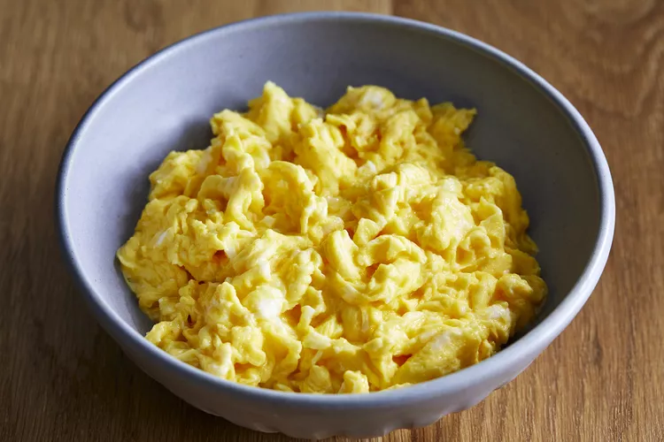

Fluffy Microwave Scrambled Eggs

Description
Use your microwave to make light and fluffy scrambled eggs for a quick and easy breakfast to start your day. Follow the technique in this recipe for perfect results every time.
Ingredients
- 4 eggs
- Quarter cup of milk
- Pinch of salt
Directions
- Break the eggs into a microwave-proof mixing bowl. Add milk and salt; mix well.
- Pop the bowl into the microwave and cook on high power for 30 seconds. Remove bowl, beat eggs very well, scraping down the sides of the bowl, and return to the microwave for another 30 seconds. Repeat this pattern, stirring every 30 seconds for up to 2 1/2 minutes. Stop when eggs have the consistency you desire.